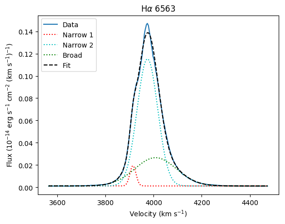
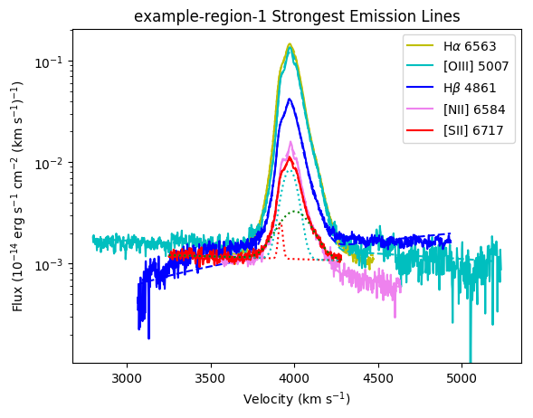
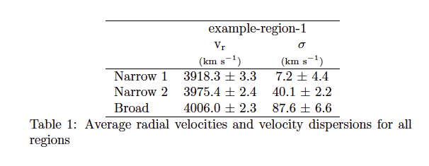
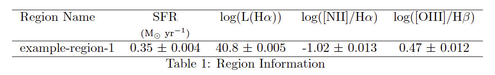

Usage¶
This package is used to fit emission lines from echelle or long-slit spectral data with a continuum and multiple Gaussian components. There are various methods that are useful detailed in the API. Example usage and analysis tools available are outlined below.
Fit emission lines¶
To set-up the properties of a region with multiple emission lines use the following class. See Example for an example set-up.
To fit emission lines in this region use the following method. See Example for an example of how to add emission lines.
Compute kinematics of a region¶
To perform an analysis on the region use the class.
Initiating this class will output several plots, tables, and data files about a region. Examples of outputs are shown below.
A plot of each of the emission lines fit with as many gaussian components as specified will be saved. An example of a fit to a H-alpha line is shown below.
A table in the form a LaTeX file and a pdf outlining the kinematics of each emission line will be saved. An example is shown below.

Plot multiple profiles¶
You may plot which ever profiles you wish together using the following function: See Example for an example of using this. An example output plot is also shown below.
Make BPT plot¶
Each region and its components can be added to a BPT plot using the following function. See Example for an example of how to add several regions onto differnt types of BPT plots. An example of a BPT plot output is shown below.
fitelp.bpt_plotting.bpt_plot()- Make different types of BPT plots
Make table of average velocities¶
A table (in LaTeX and pdf format) of the average velocities of each of the components of multiple regions can be created using the following function. An example of this table is shown below.
Make table of H-alpha and SFR¶
A table (in LaTeX and pdf format) of the star formation rate and other information about multiple regions can be created using the following function. An example of this table is shown below.
